07 · 数据与检查点：训练跑顺之后，时间从哪漏走
这章解决什么：步时调快之后，墙钟时间还会从三处悄悄漏走：读数据、存档、出故障后的恢复。这三处都不在 TPU 上算，在主机、存储和调度这几层。训练像一支车队，每一步都要等最慢的那辆车：一台主机读数据慢、建目录慢、恢复时卡住，全体都跟着停。所以这章的修法大多是同一个思路——把「等」挪出训练线程，并且给每一层的「等」设上限。
步时指数：大号模型以单片 BF16 最初基线 = 100，小号模型以开发期起点 = 100，越小越快；只在单个 A/B 里出现的数只给百分比。
依赖顺序：
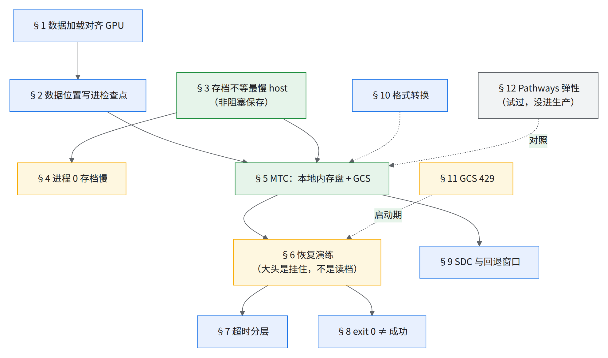
读图：蓝框是 feature，绿框是收益最大的两样，黄框是「先定位再修」的问题，灰框是试过没进生产的路线。§2 必须在 §5 之前：MTC 默认不存数据位置，恢复后会静默重复消费数据。§6 的演练催生了 §7、§8 两条规矩。
- 十倍上下 小号模型千芯片级生产：存档那一步比平时慢的倍数（§3）
- 约 40% 大号模型 128 芯片修后的存档阻塞降幅（热态）
- 约 450 s → 约 8 s 读检查点（MTC＝多层检查点：本地内存盘一层＋GCS 一层，§5）
- 4 / 9 次恢复挂住（192 芯片演练）
- 11 / 11 次注入（故意杀进程 / 删 pod 来演练恢复）全部恢复，11–14 min（10+ 片带 MTC）
- 约六成 注入演练的 goodput（有效训练时间 ÷ 墙钟；多数重启是人为注入）[推断]
1.数据加载逐元素对齐 GPU（Megatron 格式 + 共享内存索引）
前置：无；后续：§2 数据位置进检查点
收益：与 GPU 样本顺序逐元素一致（对拍 5 万步 × 8 样本 0 mismatch）；共享内存存索引后，索引内存从约 1.8 TB 降到约 267 GB。
怎么考虑的：要做 loss 逐步对拍，样本顺序必须和 GPU 侧逐元素一样，所以直接读 Megatron .bin/.idx 和自有的两种打包格式，在 TPU 侧重建同一套索引。
怎么开 / 实现要点：
| 组件 | 做了什么 | 数字 / 状态 |
|---|---|---|
Megatron mmap loader（grain_file_type = mmap / mmap_npy） |
重建 doc/sample/shuffle 索引 + 混合；各 host 独立算，host 0 原子写缓存，无 barrier | 上游 MaxText 已有 |
| lazy loader | os.pread 代替 mmap（避免 SIGBUS）；BFD 打包 |
对拍 5 万步 × 8 样本 0 mismatch |
| 共享内存存索引 | 517 数据集 × 32 shard × 8 worker，单是文档结束位置数组就 >1 TB | 见下图 |
| 启动热点 | _validate_indices 每数据集 20 s；首 batch 40 s；Fuse 读 .idx 约 45 s/数据集 |
mmap .idx、抽样校验、用 .bin 大小算 token 数 |
vm.max_map_count |
几百个 shard → mmap 用尽 | 65536 → 655360 |
| packing 进 KDA kernel | segment_ids 在文档边界重置状态 | step-0 loss 与 Megatron 差约十万分之二 |
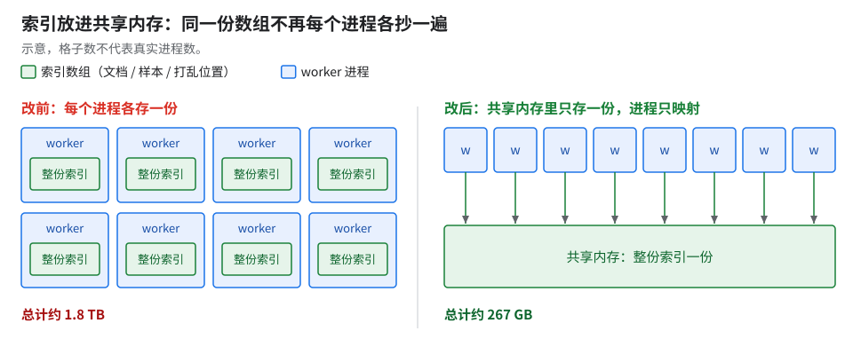
- BFD（best-fit decreasing）：把长短不一的文档按长度从大到小，塞进剩余空间最合适的那条序列，减少补零。
- PDB（per-device batch）：每个设备分到的样本数。PDB<1 表示有的设备这一步没有样本，要用占位数据填。
1.1 数据管线造成的「怪现象」
| 现象 | 根因 / 修法 |
|---|---|
| TFLOP/s 虚高、「错开两步」 | 异步 dispatch + buffered metrics；dumper（逐步导出 loss 的调试工具）每步 float(np.asarray(loss)) 强制同步，多约 5% |
同配置 total_weights 差 ±2～±370（约 25% 的 run） |
预取线程对「设定 epoch」那一步竞态，某 lane 拿到 perm∘perm（排查见表下） |
256K+CP step 0 崩（unexpected peer … different launch id） |
PDB<1 时占位迭代器少一个 key（6 vs 7）→ 各 host device_put 的 launch 次数错位。修法：占位数据补发缺的字段（填 −1），15/15 步健康、step 0 loss 逐位一致 |
| PDB<1 + CP 下永久丢样本（不报错） | process index 不连续时 scatter 用了 jax.process_index() 而非实际加载的 rank，有的样本谁都不读。修法：按 loading rank 分发、按设备 cutoff 加载、空位填 −1、epoch 按真实 GBS 算 |
| 被 TensorBoard 卡住 | gcsfuse 每次 flush 重传整文件；350+ 标量/步塞满 max_queue=10 |
| CI 里 ESTALE | metadata TTL -1（≈292 年）+ 挂载预取 |
| 恢复后首 batch 约 37 min（小号模型 4 片 Pathways 弹性实验） | 输入管线重建；colocated 数据面（输入管线放进 TPU 主机上的 colocated Python 进程）降到约 5 min（7×），没进生产（§12） |
- 跨跑逐步对拍偶发对不上时，先怀疑数据管线的并发，别先怀疑数值（
total_weights那条就是这样查出来的）。先排除 packing 平局规则、short read 两个候选；三重哈希哨兵双跑 39,283 个共同样本零不一致，才确认坏的是抽样顺序。修法是 dict 缓存 +threading.Lock双重检查锁。
- launch 错位怎么取证：
maxRestarts: 0让失败 pod 不被重启、日志留住，再开 TPU verbose 日志逐 worker 对 launch_id，才看出是哪个 host 少发了一次。 - 真数据比合成数据慢 1–2%（大号模型 1 片 JIT；真数据取自 loss 对拍配置、合成数据取自量步时配置；09 §7.2 引这里）。两边配置不全同，只看量级 [推断：两边原始步时相除]。量优化收益时两边要用同一种数据。
- host 内存怎么查：先插桩，再下结论。exit 137 只说明「被 SIGKILL」，是谁杀的（cgroup OOM、节点驱逐、人工）要靠插桩分开。
- 案例：CI 单测 exit 137，候选假说是「tmpfs 把内存吃光了」。
- 做法：在 9 个阶段点各拍一次内存快照（cgroup / free / tmpfs / RSS），外加后台每 30 s 采样一次；9 次快照合计约 150 ms，开销不到万分之一。
- 结果：available 内存最低也还剩一大截、训练进程 RSS 只占很小一部分，tmpfs 假说被推翻，改归因为节点级驱逐。
- 这套插桩上游没有，要用得自己加。
2.数据位置写进检查点（与 host 数解耦）
前置：§1；后续：§5 MTC 也要存数据集状态
收益：64 → 32 host 缩容恢复，iterator 从正确位置续读、loss 无跳变。
怎么考虑的：两处会让恢复后静默重复消费数据：
- MTC 默认不存 data iterator：多层检查点的 save / restore 只存模型
state，恢复后 dataloader 从头读（上游 MaxText 的 MTC 路径同样，是否已补未核）。 - 数据状态按 host 数绑定：每个 host 各存自己读到哪，换了 host 数就对不上。
怎么开 / 实现要点：改成单一全局状态（只由 primary host 写一个全局的「下一个样本序号」），与 host 数解耦；MTC 也存数据集状态；restore 改成探测 dataset/ 目录，不再用宽泛的 except 吞掉「没读到数据状态」。验收：恢复后首批样本序号和中断前最后一批接得上，就是生效了。
- 已知、没修：多个 iterator 时只存第一个；换数据分发（scatter）方式后 index 会静默错位。恢复后打印首批样本 index，和中断前对一下。
- 同族：按样本数触发存档的模式，续训时读回 trainer 状态那一步有差一（off-by-one）会恒返回空、改 GBS 续训会静默漂移；是否已修未核，用这个模式要自己验一次续训位置。
3.存档不等最慢 host 建目录（非阻塞保存）
前置：无；后续：§4（进程 0 独有的另一处慢）、§5、§7（「用集合通信当 I/O barrier」是超时要放宽的源头之一）
收益（几组「修前 → 修后」出自不同配置，别混着比）：
| 配置 | 修前 → 修后 |
|---|---|
| 小号模型 128 芯片 | 存档停顿 100 s → 约 12 s |
| 大号模型 128 芯片 | 冷约 −35%；热 约 −40%（图底约 19 → 11 s） |
| 故意让一台 host 睡 20 s | 修前 process-0 阻塞从 200 ms 涨到约 20 s，即全体陪等；修后应接近 0 [推断：未实测]（验收法见下） |
| 小号模型千芯片级长上下文生产 | 症状：存档那一步慢到平时的好几倍（十倍上下）；这个规模修后的数本书没有 |
怎么考虑的：慢的不是写盘，而是所有主机在训练线程里互相等（先等主进程建 GCS 目录，再等最慢那台到齐）。修法是训练线程只拍快照，其余交给后台。
- 根因怎么定位的：不是 D2H，也不是写数据，大头是 GCS 目录创建。
- 全部 host 遥测里 checkpointer 不到 2 s、manager 约 60 s（前者是各台中位数还是主进程自己的值，未核），差在 manager 里。
- 逐段计时落到
save()阻塞路径上的第二道 barrierCheckpointManager:old_steps_to_remove（sync_global_processes），其中耗时最多的是STEP/ITEM_DIRECTORY_CREATION。
- handler 是 Orbax 里负责存某一类东西的插件：模型参数一个，数据迭代器位置一个，JSON 元数据一个。异步 handler 在主线程只拍快照、写盘交给后台；同步 handler 就在主线程当场写。
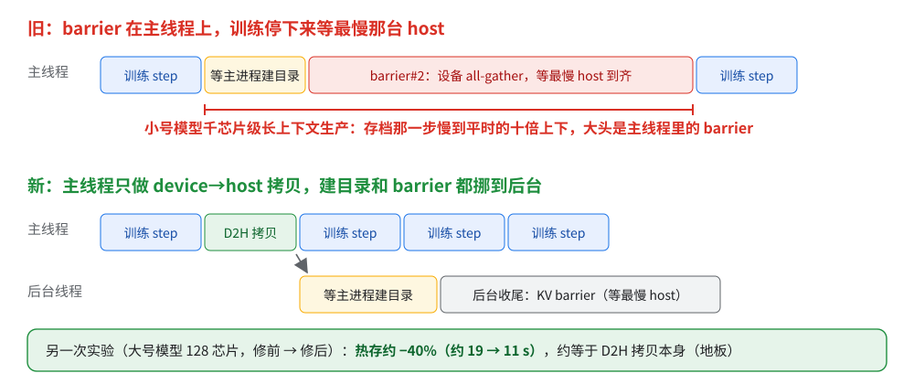
原理：主机之间问一声「到齐没」，本可以走网络上的小服务，Orbax 默认却借 TPU 跑一次全员 all-gather。 TPU 按队列干活，这一问要排在已经派出去的训练步后面，等于清空了 JAX「派发领先 1–2 步」的余量 [推断]；
save()要过好几道这种点名，每道都等最慢那台。同步 handler 还要在主线程等目录建好（见上图）。补丁两步缺一不可：handler 改异步，点名换成走 KV 存储、并挪进后台。GPU 上相当于：旧路径像用 NCCL 后端的
dist.barrier()（在 stream 上发一次 all-reduce，排在还没跑完的 kernel 后面）；新路径像改用 TCPStore 做 barrier，只走 CPU 网络、不碰 GPU 队列（类比）。把握：源码证实 · 出处：Orbax
CheckpointManager.save()、multihost.sync_global_processes（flagexperimental_orbax_use_distributed_barrier默认 False 时走jax.experimental.multihost_utils.sync_global_devices）、atomicity.create_all_async（仅主进程建目录）、CompositeCheckpointHandler.async_save（同步 handler 分支.result()）；MaxText 文档 Megascale hang playbook 把「用集合通信当 I/O 全局 barrier」列为通病，建议改用wait_at_barrier；「排在训练步后面」是推断，判据是 profile 里存档那步的设备 barrier 是否 ≈ 一个步时 + 主机偏差。
怎么开：上游没有，需自行实现（orbax 0.11.33 monkey patch，要版本守卫）。修后 barrier 残余从 1–10 s 降到 70–340 ms。最小骨架（基于 orbax 0.11.33 的结构，其他版本先核对函数名）：
- 把 Grain、JSON 等同步 handler 改成继承
ocp.AsyncCheckpointHandler，主线程只拍快照、写盘交给后台。 - 安装时检查
CheckpointManager._finalize的签名，对不上就不装，并打日志。签名变了，首次存档会报 TypeError；barrier 改了名，补丁会静默失效，速度退回修前。 - monkey-patch 掉
save()主线程上old_steps_to_remove那道sync_global_processes。 - 在
_finalize起点补一道 KV-store barrier（走分布式 KV 存储，不占设备），保证删旧 step 之前各主机都已写完。 - 验收：故意让一台主机 sleep 20 s，看 process-0 的阻塞是 20 s 还是接近 0（收益表第 3 行就该这么验，目前未实测）；再看存档前后几步的墙钟。
上游可替代到哪一步：没有现成开关；收益能拿回几成取决于自己集群 GCS 建目录的尾延迟，未测。
- 排除过的路（别再试）：
enable_per_process_directory_creation=True会死锁；升 orbax 0.12.1 没用；只调AsyncOptions没用。 - 修后的地板：热态残余 11–13 s 就是 D2H 拷贝本身，由每 host 的 D2H 带宽决定，异步化压不掉；再往下只能减少每 host 要拷的字节。MegaScale 论文（NSDI 2024）§4.4 的两阶段存档也是同一结构：先写主机内存再回去训练。
- 没试过的一条：
experimental_orbax_use_distributed_barrier=True能把 barrier 换成 KV 存储，但位置仍在主线程、仍等最慢主机，只省「设备排队」那一半 [推断：读源码；本书没测]。 - 计时陷阱：单步
seconds字段是异步测的，存档的阻塞会串到相邻 step 上，异步计时会算出几千 TFLOP/s/device 这种物理上不可能的值。看存档开销要用存档前后几步的墙钟，别看单步字段。
3.1 按样本数存档时的另一处同步（小号模型）
按样本数触发存档的模式下，周期保存和最终 / 抢占保存走同一条路径，每次都 wait_until_finished() 同步等 GCS 上传完。
- 修法两步：① 步边界不再做
block_until_ready(state)；② 拆成force_ckpt_save（最终步、抢占，必须同步）和周期保存（异步）。 - 效果（小号模型）：主线程阻塞约 200 s → 0，存档那步不再卡（11 A15 同此）。
- 副作用：samples 模式下按 step 触发的 emergency checkpoint 也一起关了，要自己补。
4.进程 0 存档慢（问题：两个候选根因）
前置：§3
症状：数千芯片大号模型文本生产作业，存档那段步时涨到平时的 3–4 倍。适用条件：本节两个修法上线前、存的是持久层（GCS，只有第 0 片主机在写，§5）。影响：按修前的存档间隔，吞吐掉三分之一左右。它和 03 生产长跑的步时漂移不是同一件事。有两个候选根因，没能判定是哪个、还是两个都有：
| 候选根因 | 机理 | 证据强度 | 修法（状态） |
|---|---|---|---|
| ① GIL 单线程序列化 sharding 元数据 | 只有进程 0 写 Orbax _sharding 文件：每个数组调 from_jax_sharding(...).to_serialized_string()，每次遍历全部 device，纯 Python 持 GIL；其他 writer 写完在等它 |
CPU 单独复现也要几分钟，与多出的时长同量级；随「数组数 × device 数」增长 | 缓存补丁 + sharding 文件写入开关（见表下）；上游没有，需自行实现；目标规模上未验证 |
| ② TensorBoard 跨区写 | region 配置写死在另一区，logdir 在训练区；跨区 copyTo 30 s 超时返回 503，uploader 反复重启，进程 0 每次存档 / profile 后慢 6–7 倍 | [推断]，没有单独 A/B | TensorBoard 和镜像仓库都搬到同 region |
- ①的修法细节：运行时 monkey-patch Orbax，普通 manager 和 MTC replicator 都装。
- 缓存：
from_jax_sharding加lru_cache（不可哈希时退回原函数）、序列化结果按实例缓存。验收：用上表的 CPU 单独复现，打补丁前后比序列化耗时。 - sharding 文件写入开关（默认开启写入）：关掉就不写这个文件；但关掉与 colocated Python 不兼容、报
ValueError。
- 缓存：
原理：有几样活只有进程 0 干，而且它在后台干活时和训练抢同一把锁。 每个数组的 sharding 元数据要对每个 device 逐个转成文本，纯 Python，开销 ∝ 数组数 × device 数；后台线程不挡主线程，却抢同一把 GIL（Python 同一时刻只让一个线程跑字节码），进程 0 一慢，全体在下一个同步点陪它等。存档收尾时合并各进程的子库、校验全部数组元数据，也只在进程 0 做（表里没列）。
把握：源码证实 · 出处：Orbax
jax_array_handlers._async_serialize_shardings（is_primary_host分支）、sharding.DeviceMetadataMesh.from_jax_mesh/to_serialized_string、base_pytree_checkpoint_handlerfinalize 里的merge_ocdbt_per_process_files、validate_all_array_metadatas；源码证实的是「谁写、开销随什么涨」，「拖慢步时」是推断。
- 不用新实验的判据：翻已有日志，只做 profile、不存档的那几步进程 0 也慢，②就成立；只在存档时慢、片数翻倍更慢，是①。
- 依据：②的症状是「每次存档 / profile 后都慢」，①只在存档时出现。
- 表外那两步占多少：监控事件
/jax/checkpoint/write/async/ocdbt_merge_duration_secs和 finalize 那行「merge_ocdbt + ArrayMetadata validation … Time taken」日志能直接量出。
- 为什么判不了：生产里两个修法都在，没有单独量过各自的存档开销；①修后的存档步数据和修前不在同一基准下，不能直接相减。要判定就得在目标规模上各关一个跑一次存档。
- 两条都值得做：①是规模越大越重的结构性开销；②是一类「依赖跨区」的通病——上线前把 TensorBoard、镜像仓库、日志桶逐个对一遍 region（region 从 downward API 读，别写死）。
- 存档之后那几步也要单独看：量「存档开销」时，把存档那步和之后 3 步的墙钟一起算。
- 实测存档后头两步各慢一截。根因是 MegaScale（libtpu 的多片 DCN 运行时，和 §3、§5 引的 MegaScale 论文同名不同物）预映射缓冲（
--megascale_grpc_premap_memory_bytes，默认 4 GiB）远小于每 host 要 D2H 的量；判据是设到 ≥ 2 × 每 host 检查点，调大的方案没验证完（见 03 §13）。 - profile 的
stop_trace上传也会让全体停约 150 s——它和存档一样是全体同步点，别放在训练关键路径上。
- 实测存档后头两步各慢一截。根因是 MegaScale（libtpu 的多片 DCN 运行时，和 §3、§5 引的 MegaScale 论文同名不同物）预映射缓冲（
5.多层检查点（MTC）：本地 ramdisk + GCS
前置：§2（数据状态要一起存）、§3、§10（转出来的检查点要能被多 host 分片读）；后续：§6 恢复演练、§8、§9
收益：大号模型 256 芯片（64 host）恢复读检查点 约 450 s → 约 8 s；但 pod 起来到第一步只从 37 降到 28 min——瓶颈已转到编译和首步（AOT 与缓存见 06）。
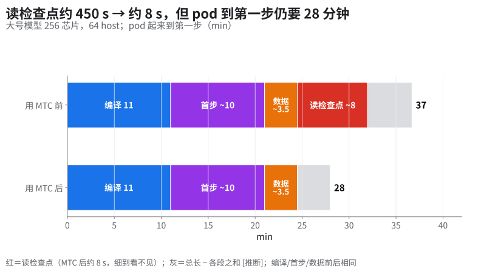
| 数字（大号模型 256 芯片，64 host） | 值 |
|---|---|
| 本地存一次：阻塞 / 后台 | 4–7 s / 32–41 s；按常用存档间隔摊到训练上，额外开销不到 1%，可以忽略 |
| GCS 标准存一次：阻塞 / 后台 | 41–43 s / 132–147 s |
| 恢复读检查点 | 冷 GCS 约 450 s → ramdisk 约 8 s |
| ramdisk 容量 | 要按每 host 检查点大小留足，否则首存 OOM |
怎么考虑的：每台主机先存进自己的内存盘（ramdisk），再隔一段时间备份到 GCS。ramdisk 随机器消失，所以后台进程 replicator 在片间补齐：各片同一位置的主机存同一份（数据并行副本），互为 peer；片内分片各不相同，彼此补不了。
读图（示意）：三幕对应底部三行字幕。
原理：内存盘比训练进程活得久，所以重启后每台主机就地读自己那份，不再几十台一起挤 GCS。 内存盘挂在节点上，不属于某个 pod，kill 进程、删 pod 都不清它。
把握：文档证实 · 出处：MaxText 文档 Multi-tier checkpointing；GKE 文档 Multi-tier checkpointing（内存盘由 CSI 临时卷驱动提供，Replicator 随 CSI driver 跑在每个节点）；MegaScale 论文（NSDI 2024）§4.4 的「组内单读 + 广播」同一思路。
怎么开（上游 MaxText 有 MTC；下面是 10+ / 20+ 片 FP8 生产参数）：
| 项 | 值 |
|---|---|
| 本地层存档间隔 | 100 步 |
| GCS 备份间隔 | 4 片作业 500 步；10+ 片、20+ 片作业 200 步 |
| 持久层 | 普通检查点和 MTC 持久层都关（风险见 §13） |
| MTC 数据并行度 | 4 / 10+ / 20+（跟片数走） |
| ramdisk 大小 | GKE 文档：TPU 本地检查点大小 × 2.2；日志打出每 host 需要量与 ramdisk 大小，启动时核对 |
| 存一次本地层（派发耗时） | 2–15 s，p50 约 5 s；开销可以忽略 |
| replicator peer | N 片每个 rank N−1 个，片数越多 peer 越多 |
| 恢复：开始 → trainer_state 读完 | 3–4 min；约 3 min 是数据集加载，读本地检查点＋搬到 mesh 只要约 19 s |
-
恢复后先确认两件事
- 本地层被接受、没有退回持久层。主判据：日志显示命中本地层；辅助：读检查点那段明显短于走 GCS（tiny 调试配置 192 芯片：本地层约 3 s、GCS 28–33 s，本地层只成功过 1 次，见 §6.1 阶段表；大号 10+ / 20+ 片生产作业读本地检查点＋搬到 mesh 约 19 s，见上表）。这说明按 device id 恢复的补丁（§13 第 1、2 条）生效了，host 重编号或 slice FAILED 换新 slice 后都走这条。
- 数据状态恢复了：首批样本序号和中断前接得上（§2）。
注：换 cube 那条路径（按列重新配对）还没有实战验证。
-
pod 起来到第一步的 28 min 里，首步约占 10 min；首步内部由哪几段构成未公开（公开文档和源码都没有分段数据；本书也没有对首步内部分段计时）。
坑（上规模的两个，数百 pod）：
- rank server 活锁：一个数百 pod 的 MTC 作业 15 min 内所有 pod 拿到的 rank 都是 −1，作业无限重启，几十个节点始终没连上。
- 机理：rank 为 −1 时 rank client 每 5 ms 轮询一次（200 Hz）。组件自带的扩展测试规模更小、参数和线上不同（超时更长、连接预热好），复现不出来。
- 叠加：Orbax 的 jax 初始化超时写死 900 s、不看 MaxText 的设置，轮询风暴拖过 900 s 就整体失败重来。
- 修法：把 ranker 挪到专用的大配置节点后能跑。带修复的 MTC driver 版本生产没用。
- 教训：MTC 在目标规模上要先跑一次故障注入（§6.2 就是这么做的），别信组件自带的规模测试。
use_replica_parallel被 MTC 写死成 False：持久层存档于是只有第 0 片的主机在写，一台慢全体等（§6.3 的停摆就是这样放大的）。在 MaxText 侧打开副本并行写本该让全部主机分摊写入，但在 MTC 下静默无效、不报错。判据：看持久层存档时有几台主机在写 GCS，别看配置。- 换了 cube 本地层就用不上（§6.1）；按 device id 配对的补丁见 §13。
6.恢复演练：大头是挂住，不是读档
前置：§5；后续：§7 超时分层、§8
结论先说：顺利时读检查点只占半分钟，不顺利时挂住 30–66 min；MTC 把读档压到几秒帮助有限，先要解决挂住。
原理：恢复是一串「等最后一个到」，哪一环有一台卡住，全体就等到那一环超时为止。 每一环都是全员同步点、等多久由超时定，所以恢复时间是长尾，期望被挂住主导：E[R] = (1−p)·R₀ + p·R_h，p = 4/9、R_h 取 30–66 中点 48 min，得约 25 min。
把握：推断 · 出处：§6.1 的阶段表与挂住统计。
读图：上半示意，下半按分钟比例画。
6.1 192 芯片演练：各阶段耗时与挂住
- 配置：三次演练，每次 3 × 4x4x4 = 192 芯片、tiny 模型；本地每 20 步、持久每 40 步、
maxRestarts: 10。 - 打断：删 Slice 2 次、
instances.stop1、instances.delete3、simulateMaintenanceEvent1；另 2 次 core dump 写满启动盘 → DiskPressure 驱逐。
| 阶段 | 顺利时（三次顺利的恢复） |
|---|---|
| 打断 → Kueue 驱逐 | 删 Slice 约 1 s；停/删 VM、模拟维护 16–21 s |
| 驱逐 → 3 片全 ACTIVE、48 pod 建好 | 74–75 s（ACTIVATING→ACTIVE 53–58 s） |
| 建 pod → TPU OK | 58–101 s |
| MTC 握手 + replicator 灌 restore 目录 + 数据集 | 64–70 s |
| 读检查点 | GCS 28–33 s；本地层约 3 s（只成功过 1 次） |
编译（命中 jax_cache_dir）+ 首步 |
78–81 s |
| 打断 → 第一个新 step | 约 6 min（三次），丢 14–36 步 |
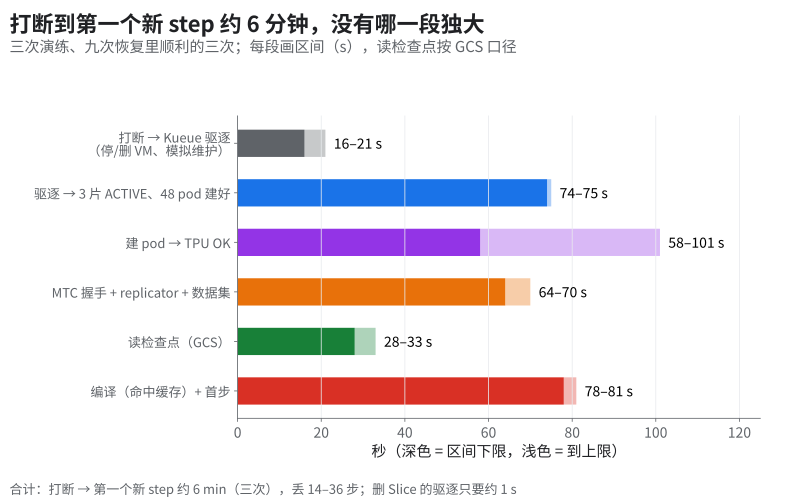
- 换了 cube 本地层就用不上：replicator 把 restore 目录灌回全部 48 台，但每次有 10–36 台被本地恢复的配对检查拒收（本机持有的是另一列写的副本），退回持久层。唯一一次读到本地层，是 pod 落回了原 cube。
- 坑（上面的拒收）：本地层被拒时数据没坏，是认领标签变了：重启后主机重新编号（修法：按设备号认领）；pod 落到别的 cube，本机拿着别列的副本（修法：按列重新配对，列不平衡时仍退回持久层）。见 §13 第 1、2 条。
- 本地层只比 GCS 省约 25–30 s；读档以外的固定开销约 5 min（上表另五段相加 290–348 s [推断：16–21 + 74–75 + 58–101 + 64–70 + 78–81]）。
最大的问题不在 MTC：9 次里 4 次恢复掉进 TPU 初始化挂住（30–66 min）。
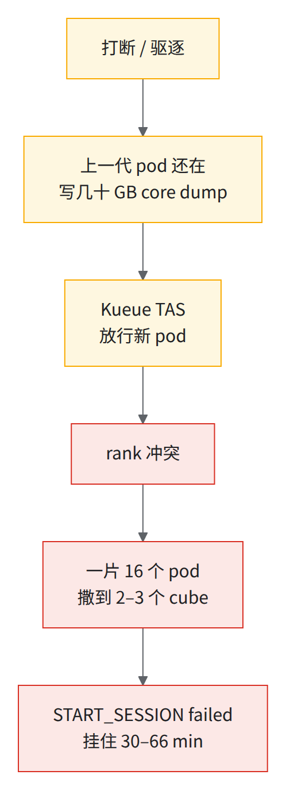
图中最后一环，libtpu 报 START_SESSION failed / Mismatch barrier id … PRE_START_SESSION_BARRIER。
📊goodput口径：goodput＝完成步数 × 同配置稳态步时 ÷ 墙钟。带挂住的两次演练只有一到两成，挂住的那一代吃掉了一半左右的时间。
6.2 10+ 片带 MTC 的注入测试
- 10+ × 4x8x8，大号模型 FP8，沿用已有 AOT 产物；本地层与 GCS 备份间隔同 §5。
- 20 个 attempt、16 次重启；其中 11 次人为注入：8 次 exec kill 训练进程、3 次删 pod。
- 「恢复」＝故障到下一 attempt 第一个新 step。
| 类别 | 次数 | 恢复路径 | 恢复耗时 |
|---|---|---|---|
| 人为注入（8 次 exec kill、3 次删 pod） | 11 | 全部原地恢复、读本地层 | 11–14 min |
| 非注入（Traceback、jax-dist-fatal、NodeFailure） | 5 | 本地层 | 10–19 min |
- 注入的 11 次全部原地恢复、都读本地层。
- 192 芯片演练那种挂住没再出现，但条件不同（192 芯片演练 core dump 开着、删 pod 打在已跨 cube 挂住的一代上；10+ 片这两项未核），不能说已解决。
- 丢掉的步数可能超过一个本地存档间隔（最近的本地存档没被用上），原因未核。
- 20+ 片规模的一次恢复约 22 min（协调服务报错，恢复中又失败一次）。两种可能的解释，关系未核：
- ① 混杂项：同一台 worker 上有一次人为 exec，可能就是一次没登记的注入 [推断]；
- ② MTC 的
RegisterCoordinatorPUT 遇到http2: client connection lost，replicator 不重试、也不往上报，千级 peer 白等 300 s；同时 rank 0 退出时的 shutdown barrier（300 s）和 restore 超时（300 s）赛跑。修法：注册加重试、暴露 shutdown 超时参数（MTC 侧修复，是否已升级未核）。 - 另一个坑：absl 日志把 CRITICAL（级别 50）当成 VLOG，致命错误日志被吞，日志里看不到真正的死因。排查 MTC 挂住时，别因为「日志里没有 FATAL / CRITICAL」就排除致命错误。
- 部分重建与全量重建都出现过，「自动只换坏片」的判据未坐实：触发原因有 slice FAILED、PodsReady 超时、NodeFailure。估恢复时间时按全部重切取上限。
原理：「只换坏片」换的只是硬件，进程照样全体重启，所以恢复时间不分两堆。 多控制器 JAX 的进程集合启动时就定死，一片掉线，其余片卡在下一次集合通信上，只能全体重启。只换坏片，省的是健康片重新排队激活那一两分钟和它们的内存盘；初始化、编译、首步一样不少。进程不停要靠单控制器（Pathways）的弹性重试，且上游只演示了固定 mesh。
GPU 上相当于：torchrun 的弹性代理，一个 worker 挂了就杀掉全组、重新 rendezvous 再起（类比）。
把握：文档证实 · 出处：JobSet 文档 Concepts（「A restart is done by recreating all child jobs」）；MaxText 文档 Elastic training（
elastic_retry，需enable_single_controller=True、elastic_enabled=true）；JAX 进程集合定死那句是推断。
- 和本节数据对得上：16 次恢复都在 10–19 min，没有按「部分换 / 全换」分成两堆 [推断：没按两组分开列耗时，判据是分组后比较]。
📊goodput [推断]口径同 §6.1：完成步数 × 稳态步时 ÷ 墙钟，约六成，其余是重启停机和重做。大部分重启是人为注入，这个数说明不了故障率。
6.3 同一套机制在生产上放大成整作业停摆
数千芯片大号模型文本 FP8 作业：
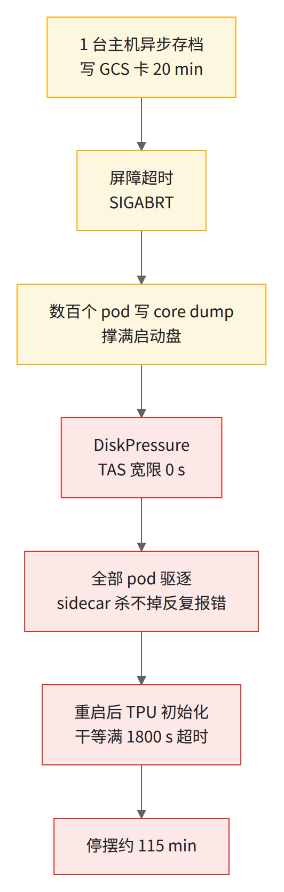
- 每一环为什么会放大：
- TensorStore 写 GCS 没有单请求 deadline，一台挂 20 min 也不报错。
- 持久层只有第 0 片的主机在写（§5
use_replica_parallel），一台慢全体等。 - 镜像默认允许 core dump，TPU 进程地址空间巨大，每台写上百 GB。
- TAS 对 DiskPressure 宽限 0 s，而 TAS 的拓扑形状把一块物理单元的节点占满，坏节点没有空位可替换，只能整片甚至整作业重来。
- 各层超时都按「宁可多等」设，最外层最慢（§7）。
- 修法（逐条对应）：
- 镜像第一行
ulimit -c 0。数千芯片上演练恢复 36 → 12 min，省下的大头（约 19 min）就来自关 core dump。 - Orbax 存档超时（
AsyncOptions(timeout_secs)）默认值比存档间隔还长，要调到小于存档间隔——否则上一次还没判失败，下一次已经开始。 - 初始化等超时：jax 分布式初始化从 1,800 s 下调到 300–600 s；其余见 §7 超时表。
- 退出时跳过 jax 的 shutdown barrier（300 s）：目前只在「MTC 初始化失败」这一种情况下直接
os._exit(1)绕过；通用版本上游还没有。 - TensorBoard 搬回同区（§4）。
- 镜像第一行
- 估计全部修完可把这类停摆压到约 40 min（估计，未演练）。
6.4 驱逐后重入：TAS 把子 Job 撒到十几到二十个 cube
数千芯片多模态作业：
- 现象：一台主机 NotReady，重新准入后各子 Job 被撒开（按物理 slice 数，全作业落到 7–10 个；按 cube 数，每个子 Job 落到 14–22 个），永远等不齐，全体挂在
make_tpu_client，不报错也不退出，只能人工 suspend；反复中断时可以数小时没有净进度。 - 机理：Kueue TAS 的 ungater 碰到还在 Terminating 的旧 pod，放弃按拓扑放置、退回贪心放置 [推断：源码分析，未确认]。和 §6.1 的「撒到 2–3 个 cube」同类，规模大了撒得更开。
- 为什么不报错：MegaScale 拓扑发现拿到不可重试的
INVALID_ARGUMENT，SendControlRPC照样重试，--megascale_topology_discovery_timeout默认 4,000 s；所有主机静默挂住，libtpu 本来要等约 67 min 才放弃。 - 三条修法：
- JobSet 配 FailureRecoveryPolicy：Terminating 超过 90 s 的 pod 直接标 Failed，不让它挡住重新放置；Kueue 侧补丁另等。
- 按子 Job 统计跨了几个 cube，超过拓扑应有的数就告警。
- pod Running 后约 25 min 还没有第一个 step 就告警（正常 p95 是 17–19 min，留余量）。告警判据看「步号在不在涨」，不看「进程活着」。
7.超时分层（按检测顺序排，逐个下调）
前置：§3（集合通信当 I/O barrier，超时要放宽的源头之一）、§6 的几次停摆；后续：11 B08
怎么考虑的：几次作业级停摆（§6.3 生产停摆、§6.4 TAS 撒片、§6.2 coordinator 断连）的共同点：「多久算挂了」各层自定，没有排序，最外层又最慢（见表后图）。
| 层（按应有的检测顺序） | 默认 | 问题 | 建议 |
|---|---|---|---|
| TensorStore 单个 GCS 请求 | 无 deadline | 一台写卡 20 min 也不报错，只能等外层存档超时 | 加单请求 deadline；改 gcs_grpc driver（§11） |
Orbax 存档 AsyncOptions(timeout_secs) |
库默认值 | 比存档间隔还长，上一次没判失败下一次已开始 | 调到小于存档间隔 |
| jax shutdown barrier / Orbax restore | 300 s / 300 s | 两者赛跑，谁先到谁决定结局 | barrier 参数名未核，只能 patch 退出路径（§6.3 修法 4）；restore 上游写死 300 s，生产里没改；可自行加一个 MTC 恢复超时配置项（默认 600 s 验证过，未进生产） |
| Orbax 内部的 jax 初始化 | 900 s，写死 | 不看 MaxText 的超时设置（§5 rank server 活锁就撞它） | 只能改 Orbax / 等上游暴露参数 |
jax_distributed_initialization_timeout |
1,800 s | 等于「挂住 30 min 才知道」 | 下调到 300–600 s |
MegaScale 跨片同步点 hang 检测 --megascale_graph_hang_threshold |
5 min | 部分主机被 GCS 限流就触发整作业重启（§11「等满 5 min」就是它 [推断：默认值相同]） | 稳态别放宽、先修限流；恢复期（灌数据、首步编译）可放宽到 20m 防误杀。几个 MegaScale 阈值取 min 才生效，单改它可能无效 |
MegaScale 拓扑发现 --megascale_topology_discovery_timeout |
4,000 s | 对不可重试的错误也照样重试（§6.4） | 能否经 LIBTPU_INIT_ARGS 调低未核；在那之前靠「Running 后 25 min 无 step」告警兜底 |
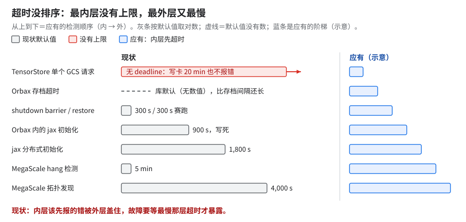
读图：左边长短错乱、第一行没有尽头，右边是应有的阶梯。上新规模前按自己的栈把表填一遍。
原理：阈值设低了误杀、设高了晚发现，两头代价不对称，所以按「合法的到达偏差」设，不按恢复总时长。 hang 阈值量的是某个 worker 在某个跨片通信上等了多久，下界是主机间合法的到达偏差：稳态秒级，恢复期还要加各主机读档、编译、数据初始化的差。误杀一次 ≈ 一次完整恢复（约 12 min，§6.2），晚发现每多 1 min 是全作业多停 1 min。按测出的偏差高分位加余量设。
GPU 上相当于：NCCL 的超时（
init_process_group(timeout=…)，watchdog 到点就杀进程），一样是设短了误杀、设长了干等。把握：推断 · 出处：MaxText 文档 Megascale hang playbook（阈值定义）。
- 能从源头去掉放宽的理由更好：把「用集合通信当 I/O barrier」换成 KV barrier（§3 的修法），稳态就能留在默认值。量到达偏差的办法：取每台主机「恢复完成」「第一步完成」时间戳的最大差。
- 同类的启动预算：数据缓存清理放在启动路径上，受启动初始化总超时（也是 1,800 s）约束，删得慢就整作业
ReachedMaxRestarts。清理不要进恢复关键路径。
8.「exit 0」不等于训练成功
前置：§5（问题出在 MTC replicator 的错误路径上）、§6（演练催生了这条规矩）；后续：08 §7
⛔检查点失败 = 进程 exit 0 = 作业显示成功
maxRestarts不触发；只能数步数、翻日志。
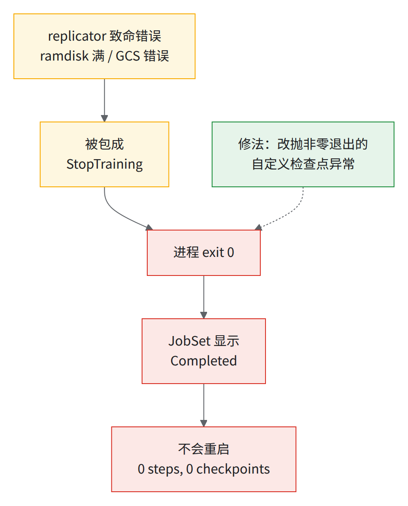
- 0 步、0 个检查点、0 个备份的作业，和跑完 400 步的作业分不出来。
- 上游没有这个问题：上游 MaxText 的
maybe_save_checkpoint用_checkpoint_error_handler抛 RuntimeError，进程非零退出。生产代码在弹性 / colocated 路径里把错误包成 StopTraining，所以「改抛非零退出的自定义检查点异常」这条修法只针对这套代码。自己的代码若也包了 StopTraining，要自行实现同样的非零退出。 - 同族：MTC driver 0.8.3 不卸 peer NFS，脏节点下个作业 10 s 后死（v0.9.0-gke.2 修）。
怎么核对（作业结束时）：
# <jobset> 换成作业名；W0 = 第 0 片第 0 个 worker 的 pod
W0=$(kubectl get pods -l jobset.sigs.k8s.io/jobset-name=<jobset> -o name | grep -- '-worker-0-0-' | head -1)
kubectl logs $W0 -c jax-tpu | grep -c "completed step:" # 期望 = STEPS（只对不重启的短作业成立；有重启/续训时改看最后一步步号 = STEPS−1 加重启次数）
kubectl logs $W0 -c jax-tpu | grep -E "replicator.failed|StopTraining|Traceback" # 不加 head：截断会把「一条」看成「没几条」
同一类「看起来成功、其实没成」的坑：
| 坑 | 现象 | 根因 | 修法 / 教训 |
|---|---|---|---|
| Vertex TensorBoard 上传线程不退出 | 跑完最后一步 pod 仍 Running 3 天多，JobSet 永不 Succeeded，卡被僵尸 pod 占着 | VertexTensorboardManager 是模块级全局对象，__del__ 里的停止上传永不被调用，后台线程卡住进程 |
改成 main() 局部变量；告警看最后一步步号在不在涨，别看「进程活着」 |
| nightly loss 校验把真 FAIL 丢了 | 成功的 run 被标 cancelled；真实超门槛（0.0217% 对门槛 0.02%）没报出来 | 轮询脚本 kubectl get pod … 2>/dev/null 吞掉凭据过期错误，$PHASE 为空又无对应分支，等到超时 |
判 JobSet.Completed=True，统计连续空 PHASE；CI 脚本里不要 2>/dev/null |
| TensorBoard 事件文件撞名 | goodput 监控停更；add_scalar 永久阻塞（实际作业里不罕见） |
三个 tensorboardX writer 文件名只到整秒、不含 PID，撞名后 GCS generation 永远 412，后台线程死，max_queue=10 写满 |
文件名加 PID；只丢监控、训练不受影响，但会让人以为训练停了 |
| 镜像构建缓存 | 改了代码、pod 跑的还是旧代码 | clone 层被构建缓存复用 | Dockerfile 用 commit SHA 让 clone 层失效 |
| libtpu 初始化挂住 | 小号模型 2K 芯片级作业 24 h 内 18 台 host 命中，每次约 17 min（15 min 等待 + 重启），pod-0 连续失败 11 次 | 真错误（slice builder UNIMPLEMENTED）被 teardown 的 FATAL 盖住；根因在 libtpu 侧 |
只能先加诊断（见下） |
- libtpu 挂住的诊断：常开
PYTHONFAULTHANDLER=1；jax.devices()外包faulthandler.dump_traceback_later(60)；按需开TPU_STDERR_LOG_LEVEL=0/TPU_VMODULE等。
9.硬件静默算错（SDC）：检查点策略要防它
前置：§5；后续：§13 第 6 条（持久层关掉后的 RPO）
问题：数千芯片文本作业上遇到两次硬件静默算错（SDC）：一次位置没查出来；另一次定位到一颗芯片，22 min 后它才报 HBM 不可纠正错误，污染了 MTC 测试作业后面的检查点（生产作业不读这批检查点，没受影响）。
- 错误比告警早 10–22 min：回退窗口留 ≥30 min，重启后比对重叠几步的 loss，对不上就再往前退（见下图）。
- 推荐的 SDC checker 只抓 ICI / DCN 传输错，抓不到片上计算错。
- checker 本身会改数值：打开它的顶层 flag 会改编译决策（融合、VMEM 估算等），即使不重复执行也带来约万分之一的 loss 差，编译期 temp 也变。做精度对拍或逐位重放时，A / B 两边 checker 必须同开同关。
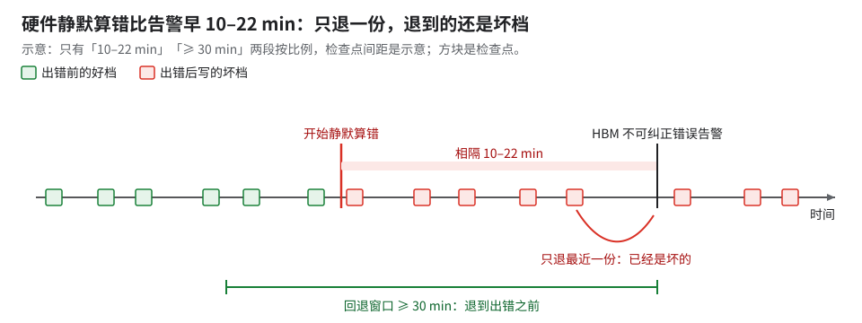
读图：从告警往回退一格仍是红档，退满绿色区间才到出错之前。
片数越多越频繁：各片独立坏时，作业平均故障间隔 ≈ 单片 MTBF ÷ 片数（两个规模的推算点折成单片 MTBF 基本相同，见 12 §7）。
- 自己估用 badput ≈ √(2δ/M) + R/M（推导见下方原理与图）。例：N 片同跑，M ≈ 单片 MTBF ÷ N；每次损失 R ≈ 恢复（§6.2 实测 10–19 min）＋ 重做那截（按本地层存档间隔的一半算）；本地层存档派发很便宜，第一项可忽略。
- 适用条件：§4 修法上线后、MTC 本地层每 100 步存一次（§5）、§6.2 的 10+ 片规模、单片 MTBF 取 12 §7 两个规模的推算值（本书不给具体数）；代入得 badput 不到 1% [推断：本段算式]。
- 不适用：§4 修法上线前的持久层存档，那时第一项不可忽略。
- 目标要求 goodput ≥95%（01）；更大片数下「goodput 上限约 95%」只是估计。按上式粗推：损失到 5% 要 M ≈ R ÷ 0.05，即 N ≈ 单片 MTBF × 0.05 ÷ R（两者同单位）[推断]。
原理：存得勤就多付存档钱，存得稀就多付重做钱，最优间隔在两者相等处；存档便宜以后，剩下的几乎全是恢复钱。 每段故障间隔 M 里存档损失 M·δ/τ，故障一次损失 R 加平均重做 τ/2：badput ≈ δ/τ + (R + τ/2)/M，最小处 τ* = √(2δM)，代回即 √(2δ/M) + R/M。
把握：公开资料 · 出处：Young 1974（CACM，一阶最优检查点间隔）；Daly 2006（高阶修正）。
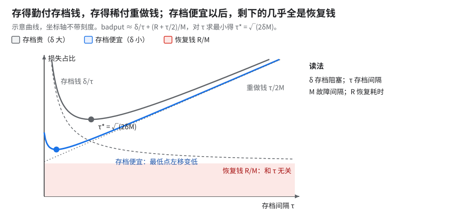
读图（示意）：蓝色 U 形贴着红色底带——存档便宜后损失由 R/M 决定。
坑：式子失效的情形——故障相关（同一电源域、同批坏件）时 M 比「单片 ÷ 片数」更短；计划内维护不该算进单片 MTBF；SDC 让回退点本身坏掉时，R 还要加上再往前退那段。R 本身是长尾，见 §6 开头。
10.检查点格式转换：几处静默退化
前置：无；后续：§5（转出来的检查点要能被多 host 分片读）
GPU（Megatron DCP / safetensors）和 TPU（Orbax OCDBT）之间来回转检查点；坑都是「能跑完，但慢或错得不出声」。
| 改了什么 | 原理 | 效果 | 坑 |
|---|---|---|---|
| 流式 safetensors → OCDBT：逐组直接写 OCDBT，多进程 + 共享内存预取，后台线程写盘；optimizer 状态按文件头里的 shape 查找 | 旧路径先把整个模型读进内存再写；流式只留一组 buffer | 峰值内存约 4.6× 模型大小 → 几 GB + 一组 buffer；去掉约 35% 冗余 GCS 读；三种检查点逐位一致 | 流式路径丢了旧路径的防护（见表下）；重写时把旧路径每道校验列出来逐条对 |
--lazy_load_tensors 透传 |
flag 定义了 main() 却从没读：取权重的 4 处写死不 lazy load；另给 lazy tensor 补 __deepcopy__，否则 Orbax 深拷贝抓住文件句柄、保存中途中止 |
修前内存不够的机器被 OOM kill；修后能转完 | 加了 flag 不等于生效，看峰值 RSS 有没有变 |
| 转 DCP 的本地模式改滚动分片 | 本地输出目录时 writer 没拿到最终目录，滚动分片不触发，静默写成一个巨型文件，上传只能单流 | 改成分片暂存再并行上传，微基准约 44× [未核：本书没复现] | 新增检查：拒绝「暂存目录 = 输出目录」，否则分片拷到自己身上后被删，丢数据 |
- 流式路径相对旧路径少掉的防护（都已补回）：shape 校验没了、optimizer 状态 dtype 没归一化、「有没用上的 key」检查挪到 finalize 之后、某个系数写死默认值、flush 会死锁。
不分片的检查点会撞缓存出口：在 CPU 节点上走「GPU DCP → Orbax → safetensors」，转出来的检查点本来就不分片；几百台主机同时读这一份，撞上 GCS 缓存层（Rapid Cache）的出口上限。
- 修法：转换时指定 sharding。
- 不是 Orbax 缺功能：Orbax 本就支持多 host 分片保存和按片恢复，问题在转换流水线没传 sharding。
- 教训：先把完整流水线（在哪转、经过哪几种格式）写出来再定位问题；只盯着想要的方案，容易把流水线配置问题当成库缺功能。
11.GCS 429：先画数据路径，再谈配额
问题：启动阶段反复撞 GCS 429 / RESOURCE_EXHAUSTED，每次重启损失 15–20 min。放大链：部分主机被限流落后 → 其他主机在跨片同步点等满 5 min（--megascale_graph_hang_threshold 的默认值 [推断]，§7）→ MegaScale 判 hang、终止整个作业。
扩 QPS 配额、缓存出口、缓存容量都没根治 429——扩的都不是真瓶颈，要按数据路径分开看：
| 数据路径 | 撞的限额 | 要点 |
|---|---|---|
| gcsfuse 走 gRPC + DIRECT_PATH | QPS 限额按项目算 | 有一部分限额在 Console 里看不到，要走 GCP 支持工单提额 |
| gcsfuse 走 HTTP/1（经 HTTP 前端） | 按桶的请求限流 | 新桶挂载没写 client-protocol: grpc，100% 流量走了 HTTP/1；扩项目配额对它无效（12 §3.2） |
| TensorStore 写检查点 | 走 JSON/HTTP 经 HTTP 前端，天生撞按桶限流 | 约占四分之一字节；写路径根本不经过扩了出口的那层缓存。建议改用 TensorStore 的 gcs_grpc driver |
| MTC 元数据探测 | 大量 404 元数据请求 | 只读数据集桶设 metadata-cache:negative-ttl-secs=-1 并开 kernel list cache |
- 做法：遇到 429 先回答三件事——谁在发请求、用什么协议、走哪个前端——再判断撞的是哪个限额，最后才提配额。429 按配额名分类监控。
- 坑：提单标题和第一句写清单位（requests per second），配额写「从 A 调到 B（+Δ）」，否则容易被读成带宽或总量。
- 建桶清单：所有 gcsfuse 挂载写
client-protocol: grpc；只读桶配 negative TTL；写检查点的路径单独核一遍。
12.Pathways 弹性训练（试过，没进生产）
前置：无；对照：§5、§6.2 的 MTC 路线
小号模型 4 片 × 64 芯片上试过上游 Pathways 的弹性训练（--num_elastic_slices、pause / resume），加 colocated Python 数据面和 OCDBT 检查点。
| 驱逐 → 回到正常步（同一任务配置） | 时间 |
|---|---|
| 普通 Pathways 重启 | 约 65 min |
| Pathways + colocated 数据面 | 约 17 min |
| 不用 Pathways 的多控制器 JAX 基线 | 约 14 min（但 JAX 版本不同，不完全可比） |
- 数据管线重建是大头：恢复期间数据管线重建 36 min → 约 5 min（7×）。§1.1 表里「恢复后首 batch 约 37 min」，其中约 36 min 就是这段重建。
- 检查点完整性检查约 7 min → 42 ms：GCS glob 模式没锚定前缀，扫了整个桶；加前缀锚定就好。任何按 glob 找检查点的代码都该查一下。
- 坏片隔离式弹性训练验证过、没进生产：约 10 min 恢复齐员，读检查点 26 s + 编译缓存命中 7 s，无重编译，loss 逐位一致。
- 坑：旧版 Pathways server 在弹性模式下持久化会双写、报
ALREADY_EXISTS，升级 server 修复；OCDBT 把 GCS 对象数从十万级降到几百个，但恢复比 zarr 慢约 85 s。 - 结论：带 colocated 数据面的 Pathways 也没跑赢普通多控制器重启，生产走的是 MTC 路线（§5、§6.2）。
13.还没解决的
- exit 0 与 MTC 按设备号配对的修复：生产代码里有，上游 MaxText／Orbax 没有；本书没复测。MTC 那条的机理：rank server 按节点名排序发 distributed id、重启后重新编号，Orbax 按这个号认本地文件而 replicator 按 JAX 运行时 index 放文件；补丁改按设备号配对。
- 换 cube 本地层被拒：生产代码已改配对逻辑（别列副本按列配对，列不平衡仍退回持久层），换 cube 的实战日志未见；跨 cube 挂住 → 改 Kueue 或关 core dump（生产上的复发与三条修法见 §6.4）。
- safetensors 检查点在约 2K 芯片恢复 40–50 min，未 profile。
- 硬件挂起不能自动检测；单 slice 无 collective 超时，MegaScale hang 检测只管多片。
- 10+ 片上真实数据没核（注入演练用的是
dataset_type: synthetic）；检查点已带 MTC 跑，但持久层是关的；premap buffer（--megascale_grpc_premap_memory_bytes≥ 2 × 每 host 检查点）需按 10+ 片的检查点重算（03 §13）。 - 持久层关掉后的 RPO：10+ / 20+ 片生产 run 持久层全关（§5），只剩本地层 + 每 200 步 GCS 备份。整池都丢（全部 host 的 ramdisk 一起没）时能回到哪一步、备份能不能单独恢复，没有演练过。
- 注入 kill 被报成芯片故障：exec kill 后几秒内报
SLICE_FAILURE_CHIP_DRIVER_ERROR：8 次 exec kill 里 7 次报了这个错；一次真实 NodeFailure 也报同一个错——错误码分不出注入和真坏。按这个错误码自动隔离节点会误伤好芯片。 ACTIVE_DEGRADED与空的 FAILED：注入演练期间 22 次ACTIVE_DEGRADED，前一状态都是ACTIVATING，之后 21 次DEACTIVATING、1 次FAILED，从没回到ACTIVE；fp8 作业遇到都伴随失败或人工重建。sliceFAILED9 次，message 字段都空。定义和根因都未核。- 跨片补货耗时没量过：新机器 ramdisk 是空的，replicator 经 NFS（
/peers/N）从别片同位置 peer 拉。192 芯片演练里这段混在 64–70 s 里。实验：删一片，单独计 peer 拉取时间，对比冷 GCS 约 450 s。 - 补货走哪块网卡没核：megascale 用 eth1／eth2 两个 DCN 接口；NFS 多半连节点 IP（eth0），若是则只用一张 200G 卡 [推断]。另外换 cube 配对补丁在片内 DP>1（如 192 芯片演练的 DP4）时列能否配平也未核。
优先级：十条里风险最大的是第 6 条 RPO。补验证的顺序：整池掉电演练 → 删一片测补货 → 复现挂住再修。
排序后的实验清单：08。
考考自己
MTC 把恢复时读检查点从约 450 s 降到约 8 s，为什么「pod 起来到第一步」仍要 28 min（原 37 min）？ 答：剩下的主要是编译（约 11 min）、首步（约 10 min）、数据初始化（约 3.5 min），都与检查点无关；这三段之外余下的约 3.5 min 没有分段计时。要靠 AOT/编译缓存和更快的数据恢复。